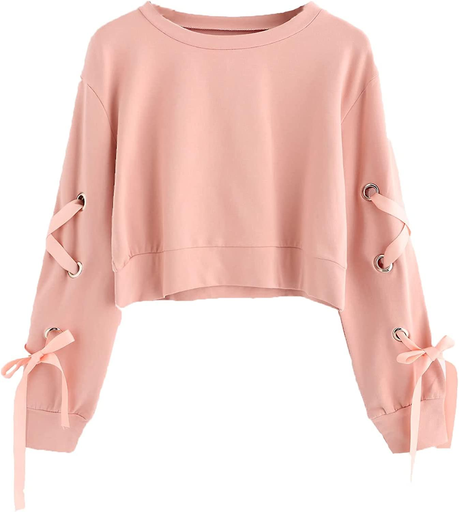

👚7 PAKAIAN YANG PERLU DIELAKKAN OLEH IBU HAMIL❌
Kehamilan adalah 1 fasa yang menyeronokkan.Namun dalam masa yang sama anda akan berdepan dengan perubahan dari aspek bentuk badan, khususnya apabila kandungan semakin membesar.Anda mungkin bukan seorang yang cerewet dalam cara pemakaian.Tetapi anda masih perlu mengikuti perkembangan fesyen ibu mengandung bersesuaian dengan diri anda.Ini bagi mengelakkan daripada memakai sesuatu yang tidak bersesuaian dengan keadaan semasa anda.Sudah tentu ia boleh menyebabkan ketidakselesaan bagi anda dan juga kandungan.

SELUAR KETAT👖
Elakkan daripada memakai seluar yang ketat kerana ia tidak akan membuatkan anda tampak kurus, memandangkan anda kini sedang berbadan dua.Lebih memburukkan keadaan seluar ketat juga boleh menyebabkan anda berasa tidak selesa serta memberikan tekanan kepada bayi dalam kandungan.
PAKAIAN SINGKAT👗
Memakai pakaian yang terlalu singkat juga adalah antara fesyen yang perlu dielakkan.Ini kerana ia tidak akan membuatkan anda kelihatan menawan. Sebaiknya, cuba untuk tampil sopan ketika hamil.
Terbelah di hadapan❌
Memakai blaus atau sebarang baju yang mempunyai belahan hadapan mungkin akan membuatkan anda tampak menarik ketika belum hamil.Namun cara pemakaian ini ketika mengandung pastinya bukan pilihan yang baik.Elakka pakaian di bawah⬇️
PAKAIAN LONGGAR👕
Sesetengah wanita hamil lebih gemar memilih fesyen ibu mengandung yang longgar dan besar.Biasanya kerana mereka mahu menyembunyikan baby bump.Namun, kadangkala pemilihan baju yang terlalu besar sangat tidak bersesuaian, malahan ia mungkin menyebabkan anda kelihatan seperti khemah bergerak. Pakaian yang longgar juga mungkin boleh membuatkan anda berasa kurang keyakinan diri.Jadi apa kata anda memakai pakaian yang cantik dan dapat menaikkan semangat anda ketika sedang hamil.
PAKAIAN DALAM TIDAK SESUAI👙
Pakaian dalam seperti seluar dalam atau bra haruslah mengikut saiz betul tidak kira sama ada anda sedang hamil atau tidak.Malahan pemilihan pakaian dalam yang betul ketika hamil boleh membantu anda untuk berasa lebih selesa.Pakaian dalam yang ketat boleh mewujudkan risiko kepada kandungan dan rasa tidak selesa.Manakala seluar dalam yang terlalu longgar pula pastinya membuatkan anda berasa tidak yakin untuk tampil menarik.
BAJU DAN SELUAR PENDEK🩳
Yes! Anda mungkin berasa selesa dengan cara pemakaian seperti ini. Tetapi ia bukanlah fesyen ibu mengandung yang sesuai untuk anda. Seluar yang pendek dan kecil serta baju-T bersama perut yang sedang membesar, hanya akan membuatkan anda tampak kelakar. Jadi elakkannya, okay?
KASUT TUMIT TINGGIğŸ‘
Memakai kasut tumit tinggi mungkin dapat memberikan anda rasa keyakinan diri.Namun untuk tempoh 9 bulan ini, apa kata ketepikan dahulu kasut kegemaran anda ini? Kenapa?Pemakaian kasut yang bertumit tinggi bukan sahaja menyebabkan anda berasa tidak selesa, malahan boleh mendatangkan bahaya. Anda terdedah dengan risiko untuk tersadung dan sekali gus boleh mencederakan anda dan kandungan.
🤰🏼TIPS MEMILIH BAJU MENGANDUNG
Sebenarnya setiap wanita mengandung masih boleh kelihatan bergaya dan rasa hebat di ata suami.Namun, anda sendiri perlu mengetahui ciri-ciri baju mengandung yang dipilih.Hal ini kerana anda biasanya akan diduga dengan dengan pelbagai masalah kesihatan sepanjang tempoh kehamilan dan mengharungi rutin harian yang mencabar.Justeru, amat penting untuk memilih baju yang selesa dan tidak rimas.
#1.Pakaian Mengikut Berat Badan
- Pilih baju yang laras kecil atau besar di bahagian pinggang supaya dapat disesuaikan dengan kenaikan berat badan dan saiz perut. Kebiasaannya, baju ibu mengandung bolleh dilaras dengan tali yang dijahot di bahagian pinggang kiri dan kanan
#2.Pilih Baju Saiz Lebih Besar
- Pastikan anda shopping ketika perut suah mula kelihatan semakin membesar. Baju khas untuk ibu mengandung ini selalu direka untuk keselesaan maksimum.Oleh hal demikian, adalah lebih baik jika anda membeli blouse mahupun dress biasa dengan saiz lebih besar kerana masih boleh memakainya untuk 3 bulan pertama kehamilan.
#3.Mengenali Jenis Bentuk Badan
- Jika perut anda lebih ke bawah, pakaian lembut di bahagian pinggang akan lebih selesa. Namun, sekiranya perut berada kedudukan lebih tinggi, anda boleh cuba wujudkan garisan antara dada dan perut dengan memakai baju yang mempunyai tali.
#4.Elak Pakaian Ketat
- Pilih baju menggunakan material seolah-olah jatuh secara semula jadi dan longgar di perut serta pinggul bagi menutup pertambahan berat badan anda. Bukan itu sahaja, pastikan anda mengenakan kain khas untuk ibu mengandung yang mempunyai getah sokongan dan tali boleh laras pada bahagian perut.Lebih baik mengenakan baju oversized seperti jubah !! (tp tk terlalu besar untuk keselessaan ❗)
#5.Pemilihan Pakaian Berdasarkan Trimester Kehamilan🤰🏼
- Untuk trimester kedua, melaburlah untuk mendapatkan beberapa pasang baju yang sesuai untuk setiap perkembangan janin👶🼠seperti ikatan di belakang dan butang.Bagi kehamilan semester ketiga pula, pilih seluar mengandung yang selesa namun tetap bergaya. Pertimbangkan untuk tidak memakai kasut tumit tinggi👠kerana boleh mmenyebabkan sakit belakang. Gantikan dengan 'flats'🩴 atau sandal👡.
🔊PEMBELIAN BARANGAN IBU🤰🏼DAN👶🏼ANAK🔊
Korang kalau ada yang berminat😍😍 boleh tekan gambar🖼️ untuk ke link shopee ❗❗
👚🤰🏼SUMMERGLITZ Cotton Nursing Blouse Baju Menyusu Selak Muslimah Breastfeeding Blouse Ibu Mengandung Baju Nursing Friendly
4.9âââââ 2.7kRatings 8.6kSold
RM30.90-RM32.90💵
👚🤰🏼SUMMERGLITZ Ironless Nursing Blouse Breastfeeding Maternity Blouse Baju Menyusu Selak Megandung Muslimah Pregnant
4.9âââââ 4.2kRatings 8.5kSold
RM29.90-RM34.90💵
🧻80PCS NON ALCOHOL BABY WIPES / BABY WET TISSUE ANTI BACTERIAL ALCOHOL FREE WET TISSUE / TISU BASAH BAYI / TISSUE👶🏼
4.9âââââ 72.6kRatings 1.8mSold
RM0.76💵
🩲👶Baby Diaper Tape Newborn Baby Diapers Lampin Kanak-Kanak
4.9âââââ 59.2kRatings 207.8kSold
RM13.90-RM27.38💵

👕👚👶CantikBaby Wholesaler price Newborn~2Y Baju Baby Homewear 2 Pcs Set Baby Clothing Set (Middle button/Singlet/T Shirt )👶
4.9âââââ 7.3kRatings 65kSold
RM3.96💵
🧩Baby PlayMat Foam Play Mat EVA Foam Floor Play Mat Puzzle Carpet DIY PlayMat Floor Carpet Play mat Bayi Mat Pet Mat
4.8âââââ 835Ratings 53.7kSold
RM1.75💵
🍼🥛Philips Avent Natural Wide Neck Baby Newborn Milk Feeding Bottle Botol Susu Bayi Twin Pack 2oz / 4oz / 9oz / 330ml 11oz
4.9âââââ 14kRatings 34.1kSold
RM12.90-RM59.90💵
Mengandung Pun Boleh Bergaya Tau💖 Stay Pretty Moms💝